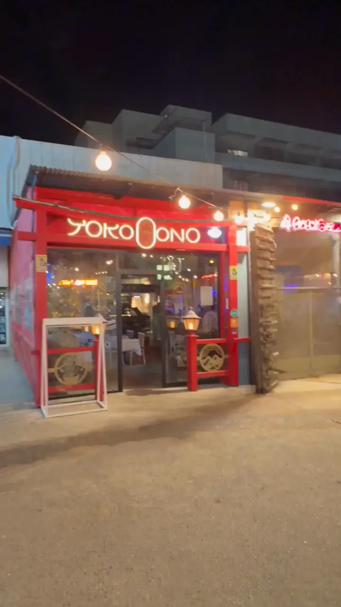
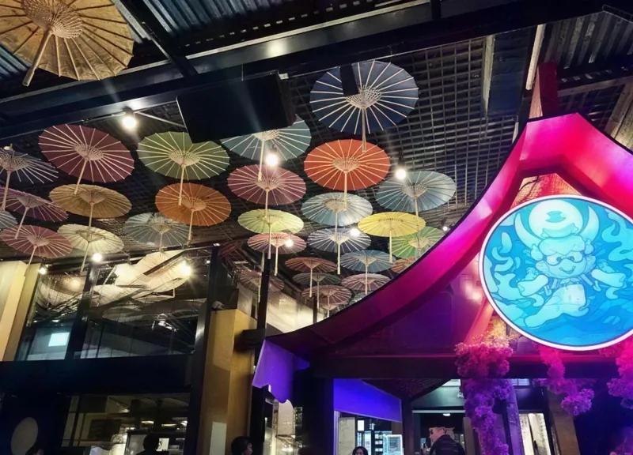
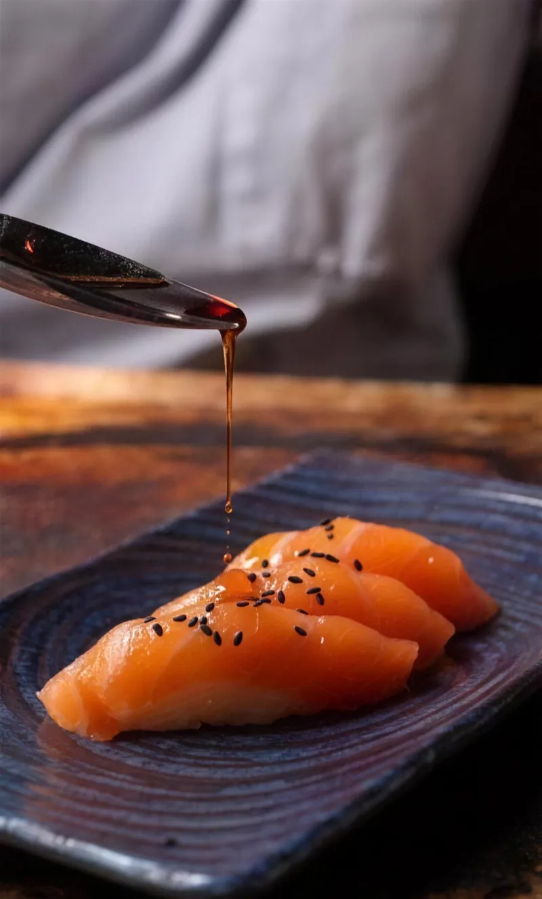

סושי.
מנות חמות.
קוקטיילים.
פיוז׳ן אסייתי, כשר למהדרין. אחוזה 124, רעננה.
גללו כדי להיכנס
החוויה
יושבים.
או לוקחים.
מסעדה בשירות מלא. סטריט סושי בשירות עצמי. ומשלוחים ב-Wolt.

- מסעדהשירות מלא לשולחן
- סטריט סושישירות עצמי
- משלוחיםדרך Wolt
- כשר למהדריןסושי, מנות חמות וקוקטיילים
איך מגיעים
אחוזה 124.
רעננה.
שעות פעילות
- א׳–ה׳
- 12:00–23:00
- ו׳
- 11:30–14:30
- מוצ״ש
- 20:30–23:00
לפי מערכת ההזמנות. כדאי לוודא בטלפון, במיוחד בחגים.
